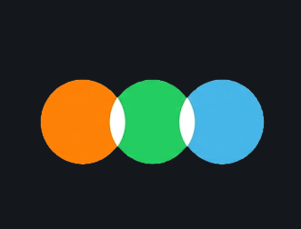
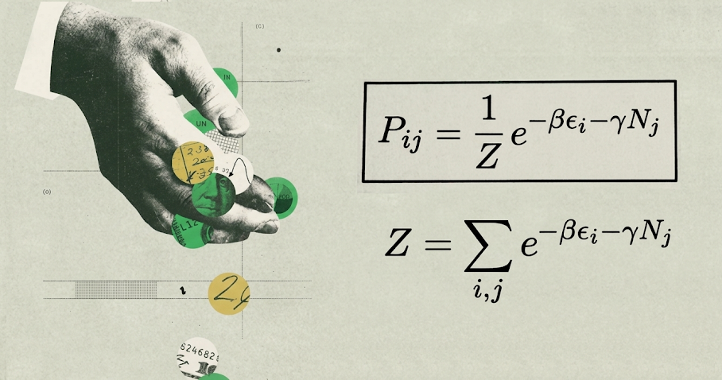
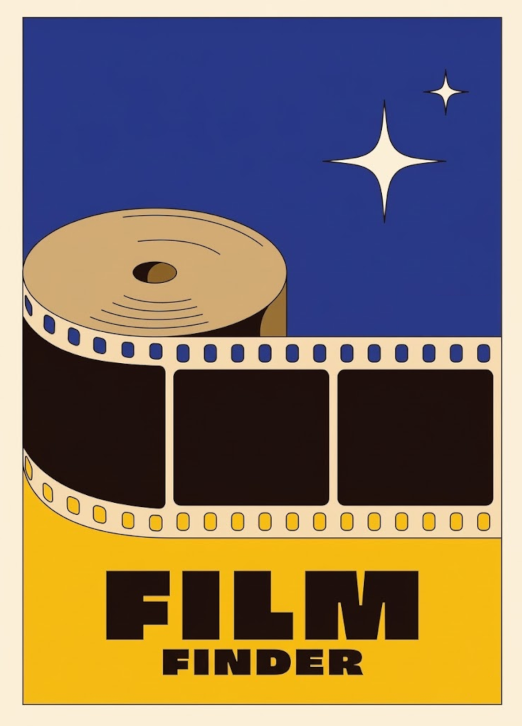
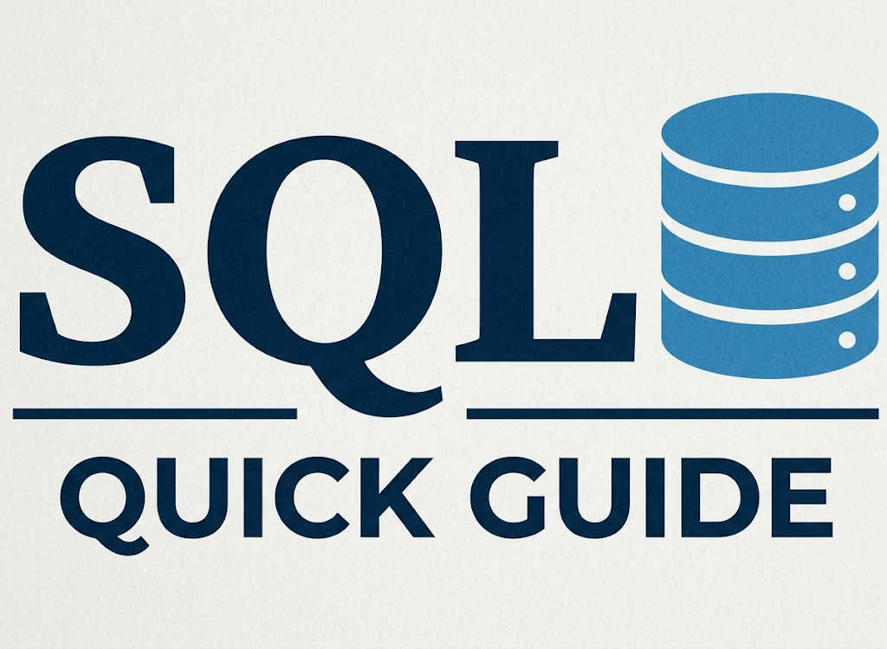
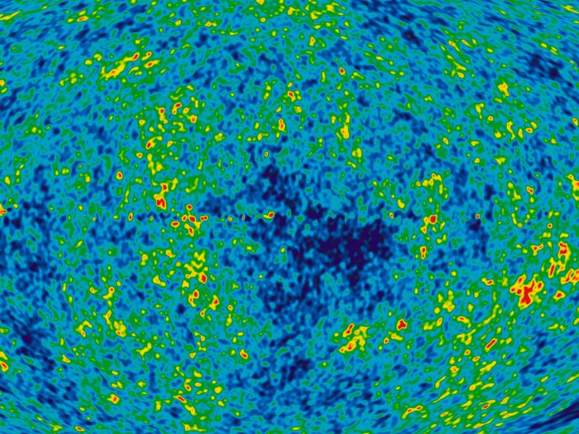
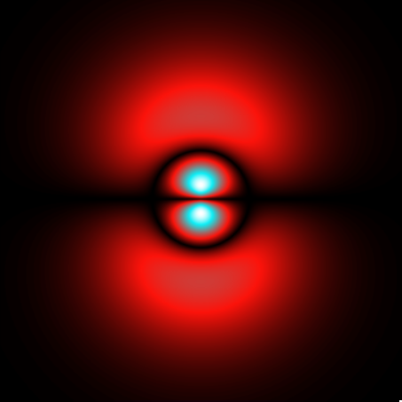

Letterboxd Dashboard
Statistical analysis, DAX measures, and data modeling exploring movie rating behaviors within the Letterboxd app ecosystem.

Modeling a bank using statistics and ideal gases
A Python simulation applying statistical mechanics and ideal gas laws to model queuing systems, transaction flows, and dynamic banking behaviors.

Letterboxd Movie Filter
An interactive recommendation tool built in Power BI, utilizing custom criteria to filter movie datasets extracted with Python and SQL.

SQL Quick Guide
A comprehensive reference manual designed for data professionals, covering everything from fundamental CRUD operations to advanced analytical queries and performance optimization techniques.

LaTeX Scientific Documentation
Professional typesetting for academic research, featuring a scientific poster presented at the RAFA conference.

Color theory for graphs
An exploration of color palettes and visual hierarchy for data visualization in Python.